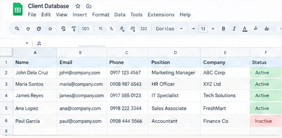
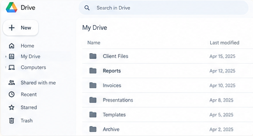
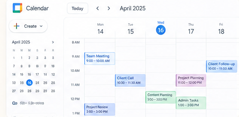
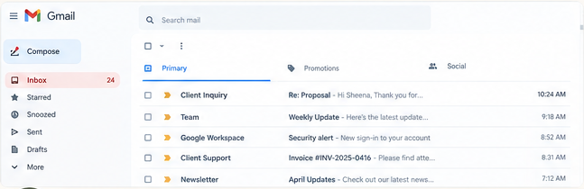
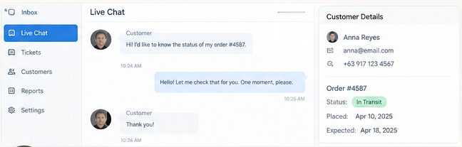

▤
Administrative Support
Keep documents, files, and everyday tasks in order.
Explore tasks ↗Hello, I’m Sheena — an Information Systems graduate specializing in Business Analytics. I help keep everyday operations organized through thoughtful administrative support, accurate records, and clear customer communication.
A practical, people-focused approach to keeping information clear and day-to-day work moving.
Reliable support starts with listening, organizing, and following through.
I’m a BS Information Systems graduate from West Visayas State University, majoring in Business Analytics. My academic and internship experience helped me build a foundation in digital record management, documentation, reporting, office coordination, and data tracking.
During my internship with the Iloilo Provincial Culture, Arts, History and Tourism Office, I maintained data logs in Excel, used shared Google tools to support team coordination, helped prepare reports, and supported digital communications. I bring that same care for accuracy and organization to administrative and customer support tasks.
Select a service card to see examples of the tasks that can fit within each support area.
Keep documents, files, and everyday tasks in order.
Explore tasks ↗Maintain organized, consistent digital information.
Explore tasks ↗Support inbox organization, calendars, and reminders.
Explore tasks ↗Help customers feel heard with clear, courteous replies.
Explore tasks ↗Clear expectations and careful checks help make collaboration easier.
Clarify the goal, instructions, priority, and preferred format.
Set up files, trackers, task lists, or a repeatable process.
Work carefully, verify entries, and review details before handoff.
Share progress, flag missing information, and document next steps.
Explore practical sample layouts for data entry, file management, scheduling, email management, and customer support. These examples use fictional details to demonstrate how I can organize everyday administrative tasks.

A structured spreadsheet for entering and reviewing contact details, role information, and record status.

A sample cloud-drive structure for keeping client files and recurring documents easy to locate.

A calendar layout for meetings, client calls, planning blocks, and follow-up reminders.

A sample inbox view for spotting client inquiries, team updates, invoices, and items that need a response.

A realistic example of acknowledging a customer, checking an order status, and explaining the next step.
Portfolio note: All names, messages, dates, and records in these visuals are fictional examples created to demonstrate my approach. They are not actual client records or claims of paid client work. My internship and academic experience are described separately in the Background section.
My background combines information systems, data handling, and coordination work.
 Microsoft Word
Microsoft Word
 Microsoft Excel
Microsoft Excel
 PowerPoint
PowerPoint
 Google Docs
Google Docs
 Google Sheets
Google Sheets
 Google Drive
Google Drive
 Asana
Asana
 Trello
Trello
 Canva
Canva
 Figma
Figma
 Power BI
Power BI
 AI research & productivity tools
AI research & productivity tools
Tell me what kind of support you need. I’d be glad to discuss the workflow, priorities, and tools that fit your team.
Based in Jordan, Guimaras, Philippines. Open to discussing remote administrative and customer support opportunities.